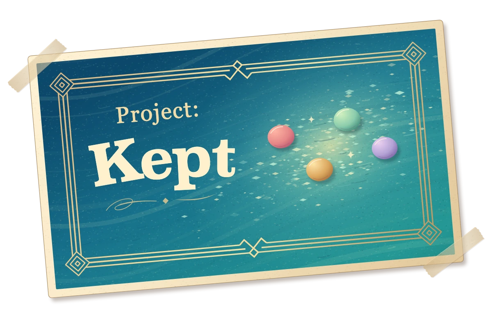

A gentle puzzle game with surprising depth.
- Connect matching colors
- Rotate the board to find new paths
- Frame your finished puzzles
Find your own way
Each handcrafted puzzle gives you a new board to explore, with changing shapes, obstacles, and goals.


Gameplay
See a puzzle take shape
Follow a path through matching pieces and see how a few small moves can open up the board.
Take your time
Calm by design, with subtle motion, rich color, and nothing shouting for your attention. Take your time, look closer, and find your own way forward.
Play without timers, ads, or daily chores. Retry freely and turn on symbols whenever you want another way to tell colors apart.